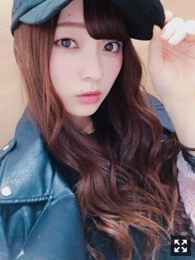

月日が流れる早さをふとした時に実感する
みなさまこんにちは！！
乃木坂46 ３期生の
梅澤美波です！

だいぶ前のです〜
最近暖かかったけど
今日は冷たいね〜
私はやっぱり寒いのが好きみたいです☺︎
冬に生まれたからかな( ¨̮ )（笑）
皆様花粉は大丈夫ですか？( .. )
私は全然大丈夫な人なんです！
でも花粉症ってすごく辛いって聞くから( .. )
対策しっかりしてお仕事や学校やバイト
頑張ってね( ˙-˙ )౨！
最近のことを！！
３／４にありました
「らじらー！サンデー」
聴いてくださった方、そして
公開生放送の仙台にお越しくださった方
本当にありがとうございました！
いや〜
本当に楽しかったです、、！！
通常ラジオって音声だけでお伝えするものだから
リスナーさんと同じ場所で同じ空間を過ごすのってとても素敵だなって思うんです☺︎
自分が発したことや起こした言動に
反応がその場で返ってくるのも好きです◎
って、レギュラーでもない私が生意気ですが
いくつかラジオを出演させていただいてきて
思うことです☺︎
ファンの方がいると安心します！
最近ラジオに出させていただくことが増えて
やりたいと思うお仕事の１つなので
物凄く嬉しいんです( .. )
初めてお会いしたオリラジさんは
本当に優しくて
リハーサルの時から緊張している久保と梅澤に
ずっとお話かけてくださったり
本当に温かい方で
とても救われました！
井上さんとオリラジさんが
ガッシリ支えてくださっていたので
心配せず私達らしくできたのではないかなあと思います。
スタッフの皆様も優しくて
楽しんでね！と声をずっとかけてくださって
幸せすぎる環境でした！
しゃゆにゃんこスターの井上さんがとにかく可愛い！
乃木中で見たのを生で見れた幸せと！
皆様に見せてあげたい気持ちでいっぱい！
そして私もみなにゃんこスター
まさかの披露しました〜∠( ˙-˙ )／ぱちぱち
（笑）
殻を破れた気がします！
この機会をくださったことに感謝です。
楽しかったな〜( ¨̮ )
牛タンも食べました！
牛タンの概念が変わるくらい
信じられないくらい美味でした！
また呼んでいただけるように
頑張ります！
天気が良い日に
たまみとランチ行った時の〜！
散歩楽しいよね〜
日光浴びるのって大切！！
髪色だいぶ落ちてきて
明るくなってきたの！
それでね最近また
お洋服買いに行ったんだけどね
買ってきたもの広げたら
ぜーんぶ黒と白だったよ〜（笑）
明るい色の買おうとしても
きっと目に止まるのが黒なんだろうね( ¨̮ )
黒大好き人間( ¨̮ )
まっくろくろすけ〜
春だから挑戦せな！
指入ってもうてるやん〜の巻
あ〜この間恥ずかしかったことね
電車乗ってて降りようと思って
すごい勢い良く立ち上がったら
つり革が頭にゴンッてなった( ¨̮ )
ちょっとだけヒールあったから
なんかすごいゴンってなった( ¨̮ )
周りの人の目が痛かったな〜（笑）
縄跳びしたとき
最高２回しか飛べなくて
自分でも驚きました( .. )衰えてきてる
鍛えなければ！（笑）
よし！
また更新するね！
色々書きたいことありますが
順番に書いていくのでまっててね◎
メガネ〜
出かけてる時に
お忍びで自撮りするシリーズ
いっぱい撮っとくね◎（笑）
それじゃあまたね
おやすみ！♪
先を見据えて動くことって
すごく大切だと思うんです、難しいけど
気づいたのならばすぐ行動！
自分を信じてがんばれたらいいなと思います！
Original：https://www.nogizaka46.com/s/n46/diary/detail/43524?ima=4955&cd=MEMBER